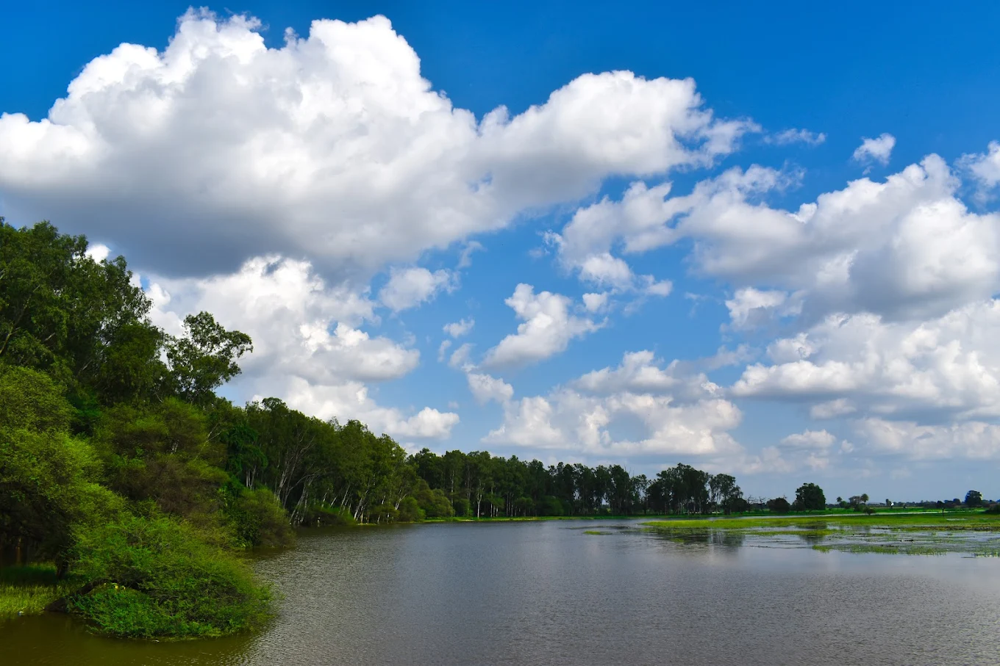
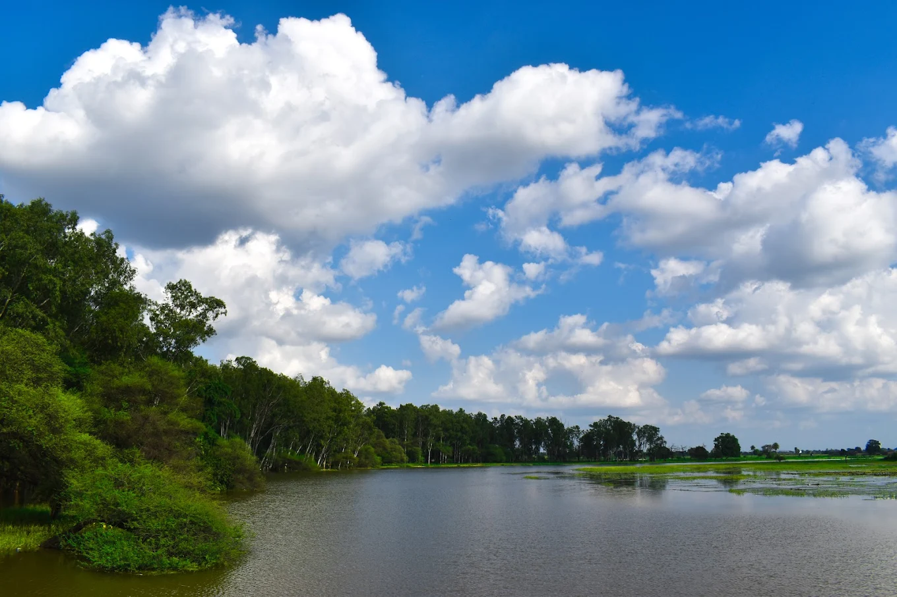

üå∏ History of Lotus Valley Gulawat
Lotus Valley (Gulawat Talab) is one of the most serene and beautiful places located near Indore. It is famous for its wide spread lotus flowers that bloom during the season, covering the entire lake with pink beauty.
The valley is also known for its scenic views, making it a popular destination for tourists, photographers, and couples looking for pre-wedding shoots.
Over the years, Lotus Valley has become a must-visit eco-tourism destination, combining natural charm with cultural significance of the region.
üìç Location & Accessibility
Lotus Valley is connected through a single-line road, and visitors usually come here by their personal vehicles.
üïí Best Time to Visit
The peak time to visit Lotus Valley is in mid-December. For the most magical experience of lotus blooms, visit in the morning hours.
üéØ Activities to Do
- Boating across the lotus-covered lake
- Gypsy & horse rides
- Photography & pre-wedding shoots
- Bird watching
- Picnic with family
üèû Cultural / Local Significance
The valley is surrounded by rivers, forests, and scenic bridges, making it both culturally and environmentally significant.
üí° Tourist Tips
- Entry fees are activity-based.
- Opening Hours: 6:00 AM – 6:00 PM
- Follow eco-friendly practices.
üåç Nearby Attractions
- Pitra Parvat
- Narmada Gambhir Sangam
- Yashwant Sagar Dam
üñº Gallery
 
